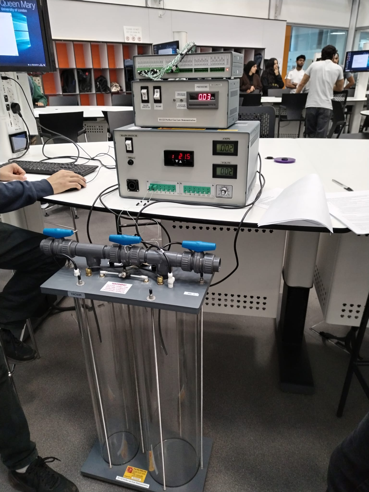
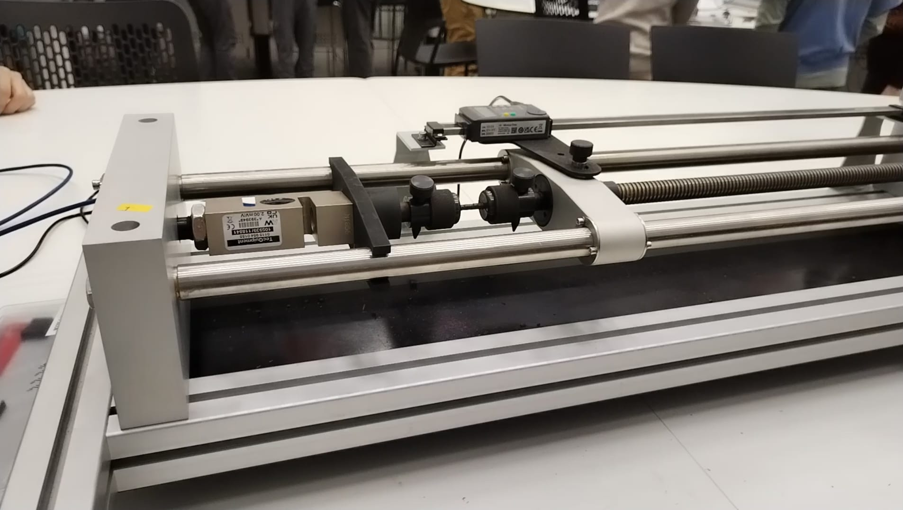
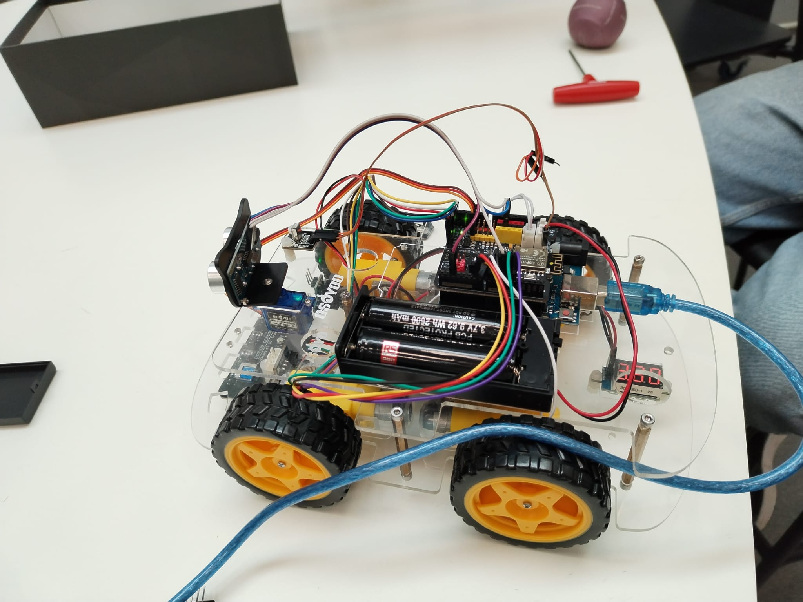
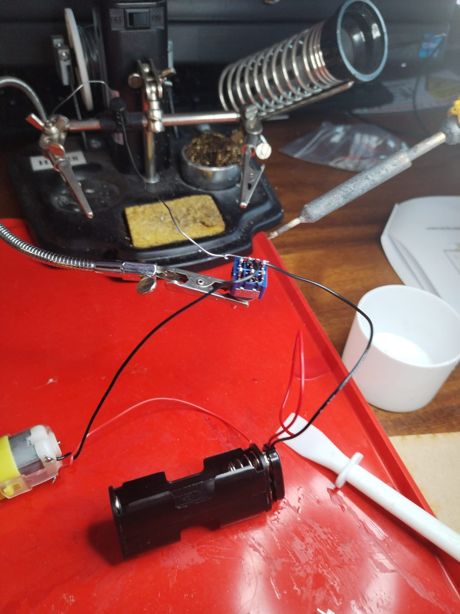
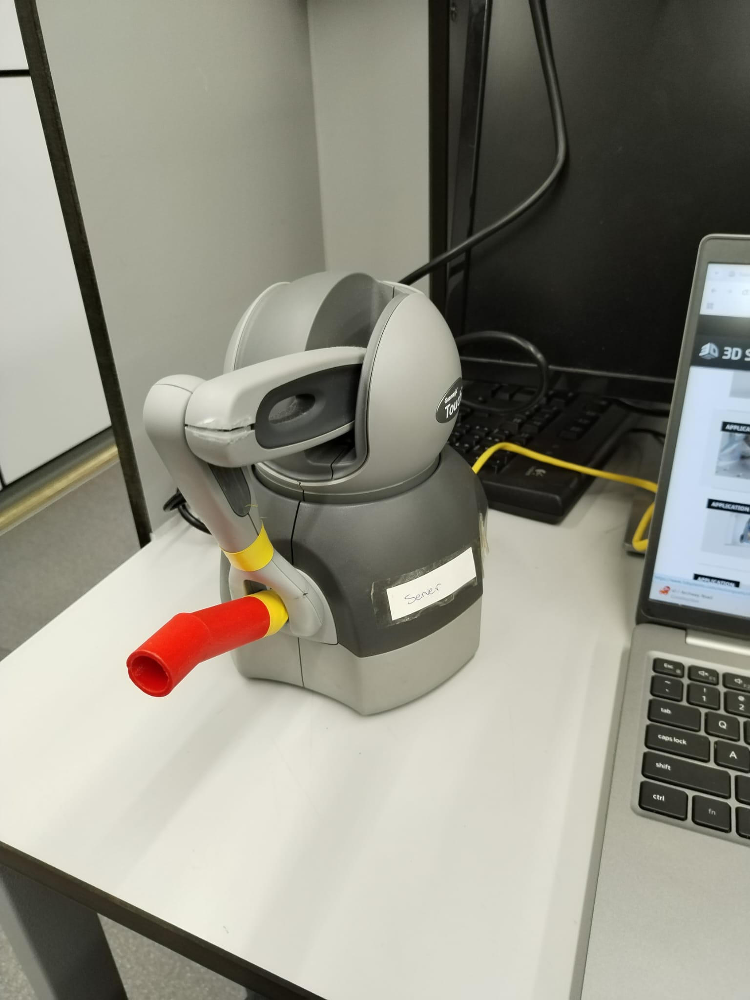
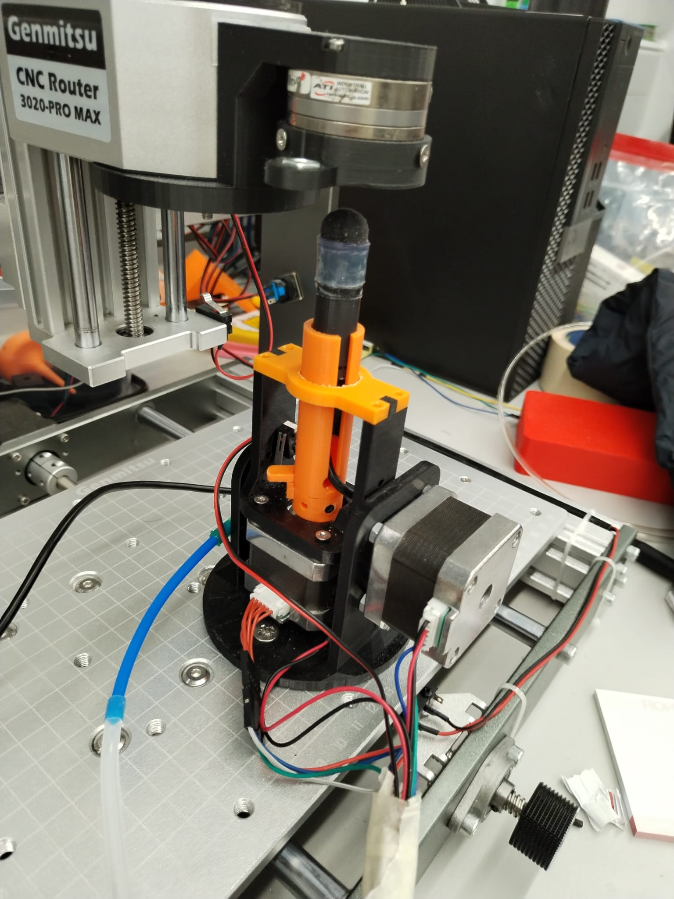
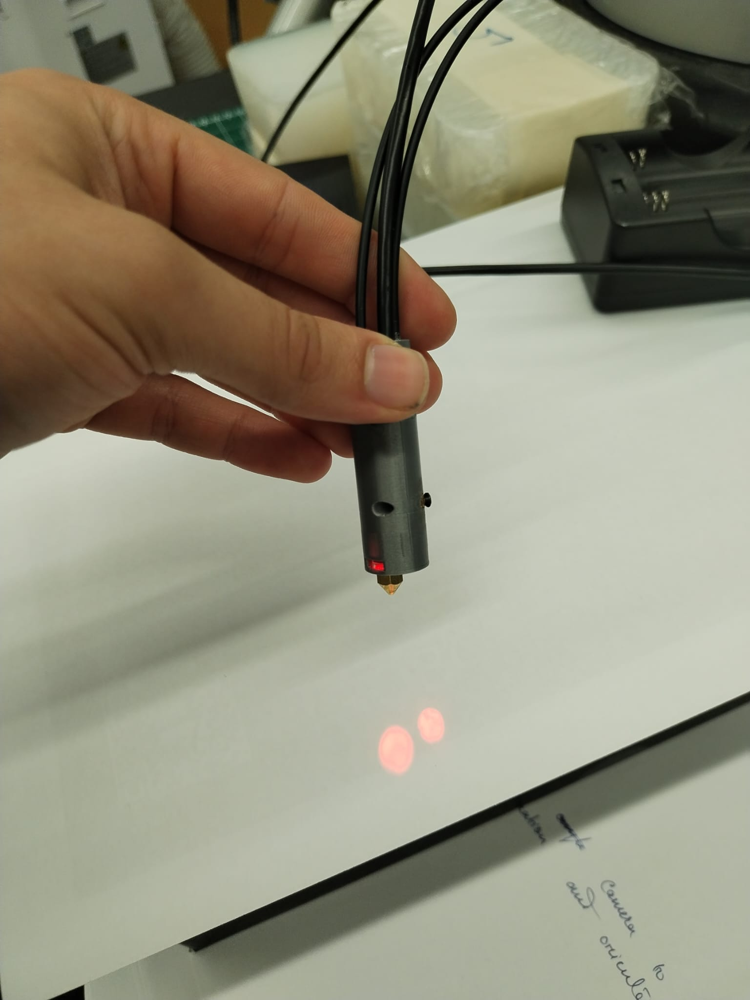

Engineering Design
Computational & Mathematical Modelling 1
Computational & Mathematical Modelling 2
Procedural Programming
Object Oriented Programming
Experimental Design and Practice
Robotics Design
Neuromechanics and Bioelectricity of Movement
Numerical Methods and Data Science in Engineering
Exploring Engineering
Experimental Design and Practice 1
Experimental Design and Practice 2




Introduction to Philosophy
Philosophy of Mind
Philosophy of Science
Philosophy of Religion
Beginning Linear Algebra
Ethics: An Introduction
Theory of Knowledge
Pratical Deep Learning and Computer Vision with Python
Beginning Linear Algebra
Exploring Animal Behaviour
Introduction to Networks & Cybersecurity
Manufactoring robotic systems for research.
Working with ROS to create robust robotic software.
Developing robotic haptic control systems with Touch X haptic.
Developing optical stiffness sensor for tumour detection.
Collaborating professionally in a research team.



Creating an effective and comprehensive computer science syllabus.
Teaching computer science to students in person.
Accompanying students to field trips such as Culham Centre for Fusion Energy.
Giving one-to-one tutorials to students to ensure their understanding in topics they find difficult.
Helping students design and develop projects for them to present.(e.g disaster rescue robots).